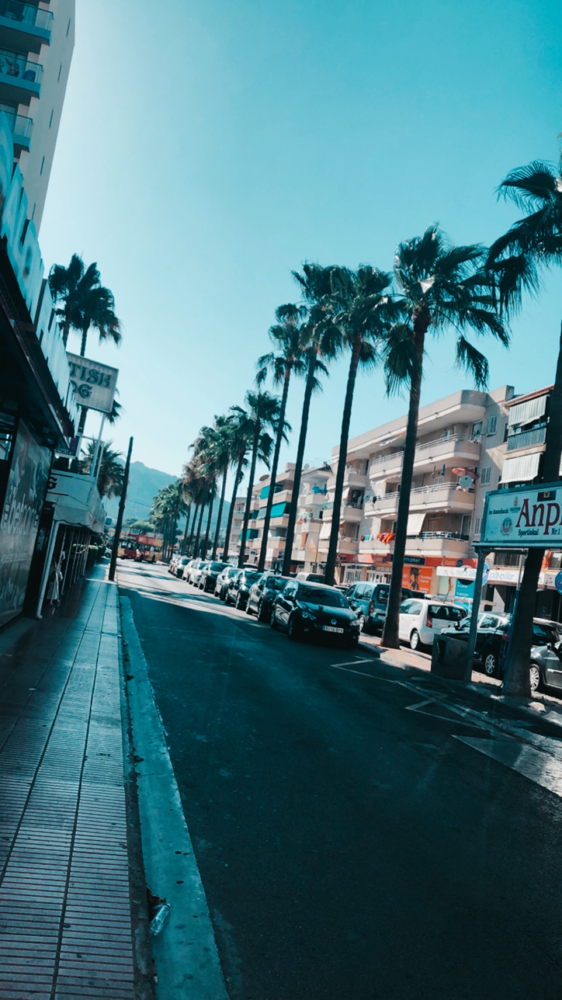
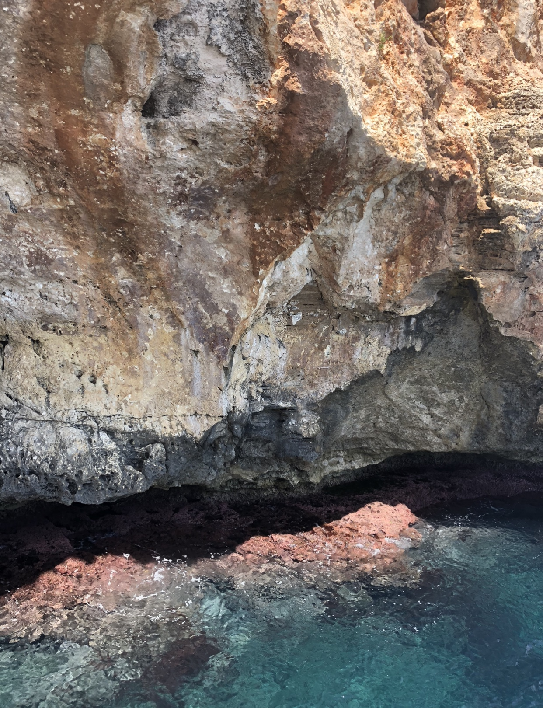
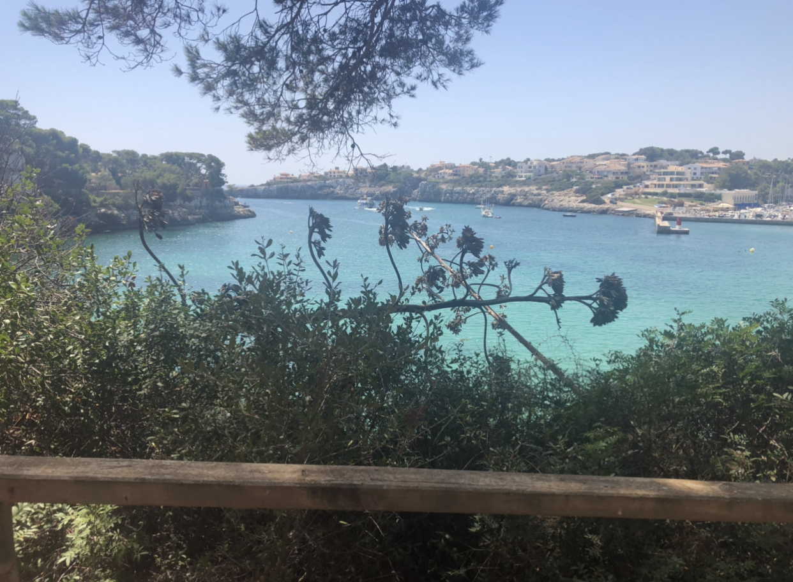
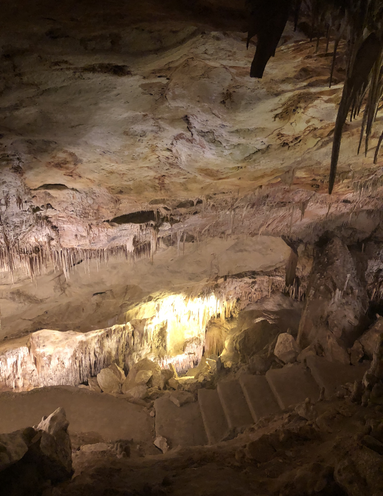

Last minute vakantie
 Mallorca was een heerlijke vakantie waarin we veel hebben ondernomen. Mallorca heb ik last minutevia een site geboekt en een kleine anderhalve week later zat ik in het vliegtuig met een vriendin. Het was een korte vakantie van maar liefst 5 dagen. Onze vlucht vertrok om 6.00 in de ochtend. Spullen gepakt en wel vertrokken we in de nacht naar het vliegveld om daar het vliegtuig te pakken naar onze vakantie in de zon. De vlucht naar Mallorca zelf duurde niet verschrikkelijk lang, opgeteld zo een 2,5 uurtjes afhankelijk van de wind natuurlijk.
- 
- 
- 
Cala Millor
Eenmaal aangekomen in Mallorca hebben we de bus gepakt naar het hotel, wat een kleine 5 minuten lopenwas naar het strand. Gelukkig was onze hotelkamer vrijwel direct gereed en konden we ons meteen omkleden
om vervolgens onze handdoekjes op het strand neer te leggen en te bakken in de zon. Omgeven door de
heldere blauwe oceaan hebben we even lekker onze rust gepakt en ontspant op het strand.
Toen we vervolgens een acceptabel kleurtje hadden opgebouwd zijn we onze zoektocht gestart naar een restaurantje
waar we wat konden gaan eten. Persoonlijk ben ik erg gek op seafood, dus wij zaten goed aan de kust. De eerste
avond heb ik een ontzettend heerlijke pasta met kreeft mogen eten en hebben we genoten van cocktails aan de kust.
De eerste avond waren we ook nog best moe dus hebben we het wat rustig aan gedaan en rondgelopen in het gebied
voor de zon onder zou gaan. Het is een prachtige omgeving met de heldere blauwe oceaan en alle rotsen die reiken
tot in de verte.
Lekker toeristisch
Dag twee zijn we op een boottocht gegaan, heerlijk toeristisch. De boot had een glazen boden waardoor je de vissentechnisch gezien zou kunnen zien. Dat viel een beetje tegen in mijn verwachtingen was het allemaal wat mooier omdat
het glas nogal dof was. Maar dat mocht de pret niet drukken want er was een gelegenheid dat we even 15 minuten mochten
zwemmen in open water. Wat ongelofelijk leuk was!
Uiteindelijk zijn we uitgestapt bij een schattig plaatsje aan de kust waar we eigenlijk de grotten wilde bezoeken.
Echter kwamen we er al snel achter dat de grotten te ver lopen waren voor hoeveel tijd we nog hadden. Ik was teleurgesteld
maar we hebben daarentegen heerlijk gegeten op een prachtig terras met een geweldig uitzicht.
Uiteindelijk was het alweer tijd om terug gegaan met de boot en hebben we die avond heerlijk wederom weer cocktails
gedronken aan het water. Vervolgens zijn we wat barretjes ingegaan en kan ik me weinig meer herinneren wat er verder
allemaal gebeurd is, wel dat het heel erg leuk was.
Cuveas del Drach
Hoogtepunten van de vakantie waren toch wel de grotten die we op de ochtend van ons vertrek hebben bezocht. Cuveas del Drach ,heel erg mooi. Deze toeristische attractie was echt de moeite waard. In deze grotten bevond zich een meer waar je met een bootje kon varen.
Als extraatje was er in de grotten een tribune gemaakt waar we met z’n allen konnen luisteren naar een boot met daarin muzikanten die klassieke
muziek speelde. De akoestiek in de grotten was prachtig. Een zeer zekere aanrader.